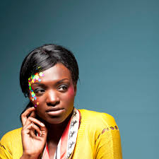

WE
buildings
OFIS arhitekti
- Based in Ljubljana by Rok Oman and Špela Videcnik (1996)
|

Rok Oman
(born 1970) studied architecture at the ljubljana
school of architecture
(grad.1998) and at the architectural association in london
(grad.2000)
Currently teaching on Harvard GSD, Boston, MA
|
|
Rok Oman
(born 1970) studied architecture at the ljubljana
school of architecture
(grad.1998) and at the architectural association in london
(grad.2000)
Currently teaching on Harvard GSD, Boston, MA
|
|
Rok Oman
(born 1970) studied architecture at the ljubljana
school of architecture
(grad.1998) and at the architectural association in london
(grad.2000)
Currently teaching on Harvard GSD, Boston, MA
|
|
Rok Oman
(born 1970) studied architecture at the ljubljana
school of architecture
(grad.1998) and at the architectural association in london
(grad.2000)
Currently teaching on Harvard GSD, Boston, MA
|
Selected lectures
- may 11 -Belgrade Design Week, Belgrade, SR
- november 10 -Territories of Urbanism : Urban Design at 50, Harvard GSD, USA
- october 10 -Sofia Architecture week, Sofia, BG
- july 10 - march 09 -master in collective housing, E.T.S.A.M , Madrid, ES
- may 10 -Politecnico di Milano, Milano , IT
- april 10 -Bilbao Exhibition Centre, Bilbao, ES
- november 09 -International conference Cuore Mostra, Bologna , IT
- october 09 -Days of Oris 09, Zagreb , CRO
- may 09 - Bergen Association of architects, Bergen , NO
- march 09 -master in collective housing, E.S.T.A.M , Madrid , ES
- september 08 -Coup de Des, fundacio Mies van der Rohe , Barcelona , ES
- may 08 -Moscow biennale, Moscow , RU
- april 08 -Banff session, Banff , CA
- january 08 -Architekturzentrum Wien, Vienna , A
- october 07 - pecha kucha,T-5, Ljubljana
- september 07 - pecha kucha,Fiera di Udine, Udine , IT
- june 07 -project arts centre, Dublin , I
- march 07 -ETSAM, Madrid , ES
- february 07 -Architektur.forum, Biel , CH
- june 06 -ETH , Zurich, CH
- may 06 - GG lecture series ,COAC, barcelona , ES
- mar 05 -festival d.architecture, liege , B
- feb 05 -RIBA, london , UK
- june 04 -University of beijing, beijing , CHINA
- nov 03 -RPI, New york , USA
- june 02 -Academie van Bouwkunst, amsterdam , NL
- march 02 -TU_Vienna university, vienna , A
- oct 01 -Academy Karslruhe, Karlsruhe , D
- sept 01 -RIBA, london , UK
Selected awards
- nov 13. Chernikhov prize 2012, Finalist , ICIF , Moscow ,RU
- oct 13. Golden Pencil 2013, Space Wheel Museum, Ljubljana, SLO
- april 13. Plecnik award, Space Wheel Museum, Ljubljana, SLO
- dec 12. Trend Awards, Space Wheel Museum, Ljubljana, SLO
- oct 12. Platinum Pencil 2012, award for extensive architectural achievements, Ljubljana, SLO
- nov 10. Chernikhov prize 2010, selected nominee , ICIF , Moscow ,RU
- mar 10. Building of the year 2009, Religious , Farewell Chapel , ArchDaily
- sep 09. IOC/IAKS award, silver medal for Footbal stadium Maribor
- may 09. Mies van den Rohe Awards 08, Nomination for Football stadium Maribor , selection
- may 09. Mies van den Rohe Awards 08, Nomination for Shopping roof apartments
- jan 07. Mies van den Rohe Awards 08, Nomination for Hayrack apartments
- dec 06. Mies van den Rohe Awards 06, Nomination for Housing on the coast
- jan 06. European Grand Prix for innovation awards, Monaco
- dec 04. bienal miami 2005, honors for villa under-extension , miami , USA
- dec 01. AR+D awards, high commendation for the city museum , Ljubljana
- jan 01. young architect of the year, winner , YAYA , london , UK
- nov 00. piranesi award, honors for housing block 16x68 , piran , SLO
Design team and collaborations since 2002-2015
Address
SLOVENIA:
OFIS arhitekti d.o.o.
Tavcarjeva 2
1000 Ljubljana, Slovenia
Tel: +386 1 4260084
Fax: +386 1 4260085
FRANCE:
OFIS S.A.R.L.
4 impasse Mont Luis
75011 Paris, France
Tel: +386 1 4260084
Fax: +386 1 4260085
Email: paris@ofis.si
Contacts
Projects: ofis@ofis.si
Press: projekt@ofis.si
*internship: info@ofis.si
*currently only limited internships in Ljubljana are offered. Online portfolio's and CV's in english are preffered.
Copyright © 1998 - 2016
All rights reserved. The copyright for any material published on this website is reserved.
Any duplication or use of objects such as image, diagrams and texts is not permitted
without written agreement.